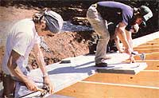

In the initial article about the construction of our earth-bermed solar home, we discussed the basic design concepts behind the planned structure, and we described the methods used to erect the dwelling's reinforced outer walls. Of course, our workers were anxious to get a roof on the building as quickly as possible ...to keep the rain out and the summer sun off their backs. And, as a result of their enthusiasm to get a little weatherproofing on the job site, in this issue we're able to tell you about the assembly of the internal roof-supporting framework and the laying-on of the sheathing and insulation.
POST AND BEAM
While designing MOM's earth shelter, our team considered several different means of supporting the sod-covered roof on the front half of the house ...including precast, pre-stressed, and castin-place concrete, trusses, and even steel beams. But after hashing out the advantages and disadvantages of the various approaches, we finally chose to go with a wooden post-and-beam arrangement ...both because it could be economically built from local materials with basic hand tools and since we felt that the huge timbers required would be attractive additions to the dwelling's interior decor.
The vertical members (or posts) are 8 X 8 hemlock pine, which we acquired from a local lumber mill. Our original plans specified 6 X 8's, but the sawyer had only 8 X 8's on hand. So rather than wait to have the smaller timbers cut, we decided to widen the central wall thickness to 8" (instead of 6") to accommodate the larger members. Each post was secured to the slab with a 10"-long piece of 1/2" rebar that was pounded into holes in both the concrete and the wood. In addition, the posts at each end of the building were tied to exterior walls with 3/4"bolts.
A total of four more uprights were then positioned at 6-foot intervals from each end of the building, and the remaining quartet of vertical members was arranged so as to make room for a stairway and to provide additional support for a long central spanning beam.
Since an 8 X 16 kiln-dried Douglas fir timber would span the middle of the living area, with 6 X 12 hemlock beams as the remaining shorter crosspieces, the posts had to be longer beneath the big beam in order to raise it far enough to provide adequate ceiling height. (The 6 X 12's would become part of an internal partition, so their clearance wasn't important.) We allowed for this necessary jog by using longer posts and by setting the 8 X 16 atop the ends of the 6 X 12's. For added security, the beams were notched to a depth of 1-1/2" so that each post could be keyed into the horizontal timbers. In addition, all the posts and beams were joined with 1/4" steel plates and 1/2" bolts, nuts, and washers.
The rafters for the front half of the house consist of 4 X 12 sections of hemlock, spaced 36" on center. These 12'10" and 13'6" crosspieces span from the central beam (where the long ones were set on the 6 X 12's, and the shorter timbers were butted against the central 8 X 16 and suspended from 2" angle iron hangers) to one brick width short of the outer edge of the thermal mass wall. Then more brick was laid around and against the ends of the timbers.
The stout framework is built to withstand the 147 pounds per square foot of pressure exerted by the framing, roofing, sod, moisture, etc., but it also offers the beauty and warmth that many claim can be provided only by wood. After working with the big timbers for the past few months, we can say that the simplicity and economy of this building method have left us quite enthusiastic about post-and-beam construction.
ROOFING
During the search for practical methods of "topping off" our earth-covered house, we came across an interesting product that's been around for many years but seems to be enjoying a real growth in popularity lately. Homasote Company (Dept. TMEN, Box 7240, West Trenton, New Jersey 08628) is a nationwide manufacturer of building supplies made from recycled paper products. And among the many different interior and exterior grade materials that the firm produces is a tongue-and-groove, approximately 2-1/2"thick roof sheathing (called Homasote) that can be combined with the company's 4" polyurethane insulation (called Thermasote) to yield an R-30 roof that's only 6-1/2" thick.
Beyond Homasote's fine insulative value, the sheathing has a couple of other important advantages. First, the 2' X 8' sheets can be laid very quickly ...and the material not only has a water-resistant outer coating, but a white vinyl interior that functions as a finished ceiling.
Unfortunately, however, we estimated that Homasote couldn't quite provide the strength needed to span the 36" gaps between the rafters of the sod-covered portion of our house's roof. So we opted to use the full 6-1/2" marriage of sheathing and insulation on the rear of the house only ...and we combined sturdier 2 X 6 tongue-and-groove pine decking with Thermasote insulation on the earth-loaded front roof.
Once the 2 X 6 decking was laid down (a process that was made more time consuming by the need to trim the rafters with an adze to keep the boards level), the roofing went on quite rapidly. It took a four-man crew just two days to apply the Thermasote to the to-be-sodded area, and both Homasote and Thermasote to the 2 X 10 rafters (spaced on 24" centers) on the second story. Of course, lifting the roughly 80-pound panels did prove to be a bit of a task, but the speed with which the panels could be nailed down compensated for the extra effort.
What's more, the cost of the Homasote Company's products turned out to be quite competitive with that of a comparable conventional roof. We paid about $1.10 per square foot for the materials ...and when one totals the potential costs of the customary framing for insulation, applying decking, and finishing the interior ceiling, the recycled paper products begin to look very economical.
CAPPING THE BRICK WALL
Once the roofing was in place on the front of the house, we were able to complete the magnesite brick balustrade atop the thermal mass wall. Brick was laid on the inside and outside of the wall, between and across the ends of the rafters. The center section of this hollow wall was filled with vermiculite insulation, and then a course of 12"-wide concrete block was set down above that and loaded with more insulation. On top of the block, bricks were continued with the normal three-wide arrangement. As a final precaution against the exposed parapet's drawing heat from the mass wall below, we mixed mortar for the insulated section at a rate of eight shovels of sand, to eight shovels of vermiculite, to one bag of mortar.
NEXT TIME
At this stage we're ready to tackle the task of waterproofing. Our next report will detail the application of a Carlisle rubber membrane to the sod roof, and then look into troweling bentonite clay onto the exterior bermed walls. We'll also describe the construction of the second-story floors and the stairway.
As you can see from the accompanying photographs, our project is beginning to look like a house. In preparation for the next issue we'll take the key steps that are required before actually applying the earth sheltering ...and we'll pass on the benefits of that experience to you!
This is part of a seven-part series on building My Mother's House.
Part I, Part III, Part IV, Part V, Part VI, Part VII
|
An 8 x 16 beam was stacked on the 6 x 12 timbers to leave head room in the center of the house. |
All of the beams were notched, with an adze, to key them to the posts. |
The stud frame second-story front wall is eight inches thick. |
|
The Homasote and the Thermasote sheets were piled up on the front roof prior to their application. |
 The 2 x 8 sections of Homasote being hammered together and nailed down. |
Inside the future living room . |
|
The house as it stood during summer seminars at MOM's Eco-Village. |
|
|